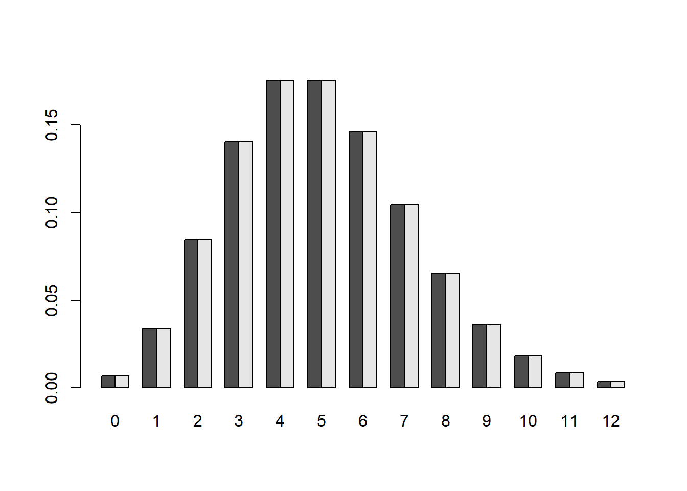

Display how often 3 mutations would occur in the Poisson(5) model:
dpois(x = 3, lambda = 5)## [1] 0.1403739Okay, I think I’ve got this RMarkdown business (partially) figured out!
We can also vector our probabilities for all values 0 to 12:
dpois(x = 0:12, lambda = 5)## [1] 0.006737947 0.033689735 0.084224337 0.140373896 0.175467370 0.175467370
## [7] 0.146222808 0.104444863 0.065278039 0.036265577 0.018132789 0.008242177
## [13] 0.003434240Q 1.1 What if you want to create a factor that has some levels not yet in your data?
Answer
genotype = c("AA","AO","BB","AO","OO")
genotypeF = factor(c(genotype,"Level"))
levels(genotypeF)## [1] "AA" "AO" "BB" "Level" "OO"Q 1.2 Repeat this function call a number of times. Why isn’t the answer always the same?
rbinom(15, prob = 0.5, size = 1)## [1] 1 1 1 0 1 0 0 1 0 0 0 0 1 1 1rbinom(15, prob = 0.5, size = 1)## [1] 0 1 0 0 1 0 1 1 0 1 0 0 1 1 0rbinom(15, prob = 0.5, size = 1)## [1] 1 1 1 0 1 1 0 1 0 1 0 0 1 0 0Just because the probability of success is 0.5 doesn’t mean that half the events will be 1 and half will be 0. The 0.5 probability applies to each event individually, which is why you get different outcomes every time you repeat several trials.
If we only care about successes, we can set size to the total number of trials:
rbinom(1, prob = 2/3, size = 12)## [1] 5Q 1.3 Repeat this function call ten times. What seems to be the most common outcome?
rbinom(1, prob = 0.3, size = 15)## [1] 6rbinom(1, prob = 0.3, size = 15)## [1] 6rbinom(1, prob = 0.3, size = 15)## [1] 3rbinom(1, prob = 0.3, size = 15)## [1] 3rbinom(1, prob = 0.3, size = 15)## [1] 4rbinom(1, prob = 0.3, size = 15)## [1] 6rbinom(1, prob = 0.3, size = 15)## [1] 3rbinom(1, prob = 0.3, size = 15)## [1] 4rbinom(1, prob = 0.3, size = 15)## [1] 5rbinom(1, prob = 0.3, size = 15)## [1] 7An outcome of 6 seems fairly common, but this will change from one set of 10 to another. A sample size of 10 isn’t actually big enough to see what the most common outcome really is. Looking at the distribution is a better way:
The actual most frequent value will be 4!
Q 1.4 What is the output of the formula for k = 3, p = 2/3, n = 4?
probabilities = dbinom(0:4, prob = 2/3, size = 4)
round(probabilities, 4)## [1] 0.0123 0.0988 0.2963 0.3951 0.1975The probability of seeing X = 3 successes is 0.3951. Can I check this with the formula from the text, too?
n = 4
k = 3
p = 2/3
P = ((factorial(n)/(factorial((n-k))*factorial(k))))*(p^k)*(1-p)^(n-k)
P## [1] 0.3950617That’s the same! Satisfying!
When p is small and trials n is large, binomial distribution can be approximated with Poisson, with rate parameter lambda = np.
Q 1.5 What is the probability mass distribution of observing 0:12 mutations in a genome of n = 104 nucleotides, when the probability is p = 5 x 10-4 per nucleotide? Is it similar when modeled by the binomial distribution and the Poisson distribution?

The probability distributions are very similar when modeled by binomial distribution and Poisson distribution, confirming that the Poisson distribution is a good approximation in certain situations.